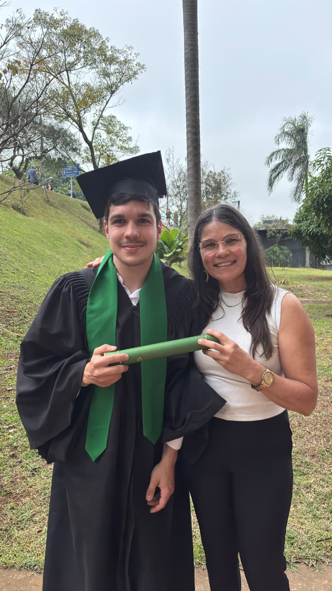

IA generativa & agentes
Exploro LLMs, RAG e Agentic AI com LangChain e MCP, conectando recuperação de informação, integração de ferramentas, avaliação e práticas de LLMOps.

Sou cientista de dados na Tesouraria do Bradesco, pesquisador e aluno na UFABC. Meus interesses conectam pesquisa econômica, mercados financeiros e inteligência artificial, com foco na construção de modelos e aplicações que apoiem decisões de negócio.
No Bradesco, desenvolvo soluções com Machine Learning e Generative AI junto à tesouraria. Minha atuação envolve identificar oportunidades, formular problemas, experimentar abordagens e avaliar modelos para construir soluções escaláveis e seguras, alinhadas aos objetivos do negócio.
Minha formação e atuação combina estudos em modelos estatísticos e bayesianos, Machine Learning, Deep Learning e Reinforcement Learning. Tenho interesse em todo o processo de modelagem, incluindo experimentação, interpretabilidade e rastreabilidade de experimentos com MLflow.
Paralelamente, aprofundo meus estudos, projetos e atuação profissional em LLMs, RAG e Agentic AI, explorando embeddings, busca vetorial, LangChain, LangGraph e integração de ferramentas via MCP. Também estudo avaliação de sistemas de IA e práticas de MLOps e LLMOps para aproximar a experimentação de aplicações confiáveis em produção.
Boa parte do aprendizado vem de livros que ocupam uma parte importante da minha formação. Gosto de compreender os fundamentos dos métodos que utilizo e conectar ideias de estatística, computação e economia.
Também sou professor voluntário de matemática em um cursinho popular, onde busco ajudar alunos de origem semelhante a minha acessarem um ensino superior gratuito e de qualidade.
Boa parte dos livros que marcaram minha formação veio de recomendações. Aqui compartilho o que estou lendo, aprendendo e planejando explorar; quem sabe sua próxima leitura esteja por aqui.
Exploro LLMs, RAG e Agentic AI com LangChain e MCP, conectando recuperação de informação, integração de ferramentas, avaliação e práticas de LLMOps.
Aprofundo estudos em Machine Learning, Deep Learning e Reinforcement Learning, combinando métodos bayesianos, experimentação com PyTorch e práticas de MLOps com MLflow.
Pesquisa em inferência gráfica e estatística bayesiana na UFABC, com financiamento do CNPq. Também investigo Fairness in Machine Learning, considerando matrizes de custo e os impactos das decisões dos modelos.
Experiência na Tesouraria do Bradesco, pesquisa na UFABC e formação em ciência de dados, matemática e estatística.
Aprendizagem estatística com Python: laboratórios, experimentos e projetos de regressão, classificação e aprendizado de máquina.
Explorar repositório ↗Experimentos para compreender tokenização, embeddings, predição de tokens e hidden states.
Explorar repositório ↗Cinco projetos, diferentes caminhos. Escolha um ponto do percurso e explore as fases de cada ideia.
Passe pelas fases usando as setas ou deslizando no card. Em “Conhecer o projeto”, veja a descrição completa e todas as imagens.
Escolha um projeto para explorar suas fases no card principal.
O aprendizado é a parte mais importante da jornada. Entre livros, artigos e experimentos, sigo a curiosidade para aprofundar fundamentos e descobrir novas possibilidades.